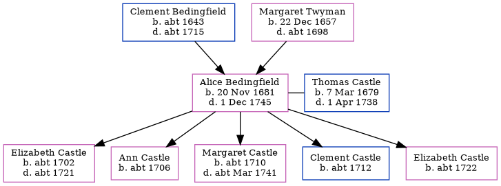

Alice Castle (née Bedingfield) 1681 - 1745
[ Home ] | [ Calendar ] | [ Surnames Index ] | [ Errors ] | [ Family History ]The child of Clement Bedingfield and Margaret Twyman, Alice Bedingfield, the 7 times great-grandmother of Nigel Horne, was born in Margate, Kent, England on 20 Nov 16811 and married Thomas Castle (with whom she had 5 children: Elizabeth, Ann, Margaret, Clement and Elizabeth) at St. John the Baptist Church in Margate on 14 Sept 17012.
She died on 1 Dec 1745 in Margate and was buried there at St John the Baptist Church on 18 Dec 17453,4,5.
Parents
- Clement was born c. 1643
- Margaret was born on 22 Dec 1657
Children
- Elizabeth was born c. 1702
- Ann was born c. 1706
- Margaret was born c. 1710
- Clement was born c. 1712
- Elizabeth was born c. 1722
Citations
- Kent Burials - Findmypast
- Kent, England, Tyler Index to Parish Registers, 1538-1874 Online publication - Provo, UT, USA: Ancestry.com Operations, Inc., 2010. This collection was indexed by Ancestry World Archives Project contributors.Original data - Frank Watt Tyler. The Tyler Collection. Canterbury, Kent, England: The Institute of Herald
- Kent Burials - Findmypast
- Kent Burials - Findmypast
- England Deaths & Burials 1538-1991 - Findmypast
Media
Canterbury Marriages Transcription - GBPRS-CANT-M-97110716-2
Kent Burials - GBPRS/CANT/D/95158858
Kent Burials - GBPRS/CANT/D/95556318
England Deaths & Burials 1538-1991 - R_277279729
England Marriages 1538-1973 - R_848612055/2
England Marriages 1538-1973 - R_848439895/2
England Marriages 1538-1973 - R_847894201/2
Family Tree
Map
Generated by ged2site. Last updated on Jul 3, 2024
Known Issues
Death date (1 Dec 1745) has no citations